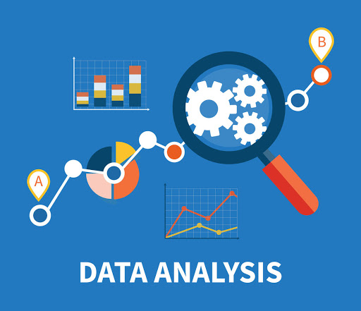

유용한 정보를 발굴하고 결론적인 내용을 알리며 의사결정을 지원하는 것을 목표로 데이터를 정리, 변환, 모델링하는 과정
- 가치가 있는 문제를 찾고 분석의 목적 설정 그리고 분석 대상에 대한 전문지식을 쌓아야 하는 과정
- 분석에 필요한 데이터를 확보하는 과정
- 데이터 셋 확인 - 중복값 제거 및 결측값 보정 - 이상값 처리 - Feature Engineering순으로 이루어진 과정
* Feature Engineering - 새로 관측치나 변수를 추가하지 않고도 기존의 데이터를 보다 유용하게 만드는 방법.
- 데이터 베이스에서 이루어지는 영역 테이블 쪼개고 관계 설정하는 과정
- 필요한 분석을 사용해서 시각화하는 과정
- 분석 결과 및 인사이트를 설득력 있게 정리/전달하는 과정